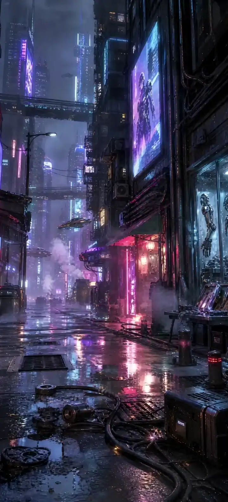
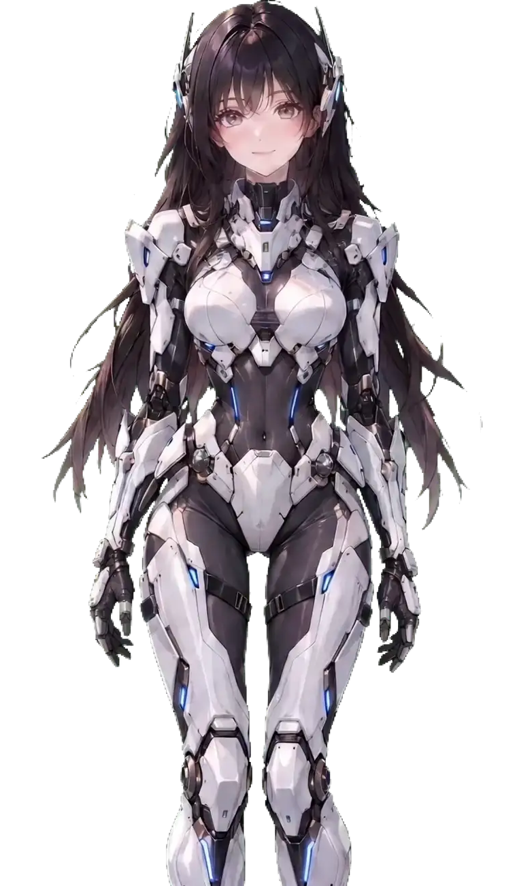
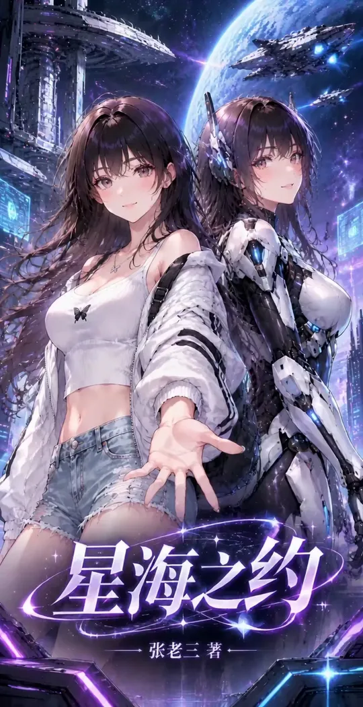

UNIT
SIRI
LV.1 · 相识
DAY 1
--:--
----.--.--
0COMBO
SIRI
闲聊
AUTOTAP ▸
◆
外出
回想
存档
换装
礼物
档案
LV.1
指挥官
—
羁绊
功能
设置
配音100
背景音乐36
音效50
播放配音关掉后只有文字
背景音乐
音乐鉴赏
NOW PLAYING
—
0:000:00
CG 图鉴
剧情线
已通关进行中未解锁
主线MAIN LINE0%
支线BOND EVENTS0%
培养
今天还能培养 3 次
心情
60
今天结束
互动


SIRI · COMMAND TERMINAL
轻 触 任 意 处 进 入
WORLD FILE · 07
星 海 之 约
第七区的通讯阵列断了十一天。
你是被派下来的最后一个维修员——如果这一趟也修不好，这片街区就彻底没有信号了。
塔里还有一个没登记的单元。编号 SIRI，初始型战术单元。
她在这十一天里，没有跟任何人说过话。
每天你有 3 次培养、若干 ENERGY。
陪她过节、训练、出门、说话，故事会自己往前走。
30 天之后，你会看到她变成了什么样子。
轻触任意处 →
IDENTITY · UNRESOLVED
该怎么叫你
档案里，别的地方都填满了。
只有你的名字，还空着。
……这一栏，我想自己写。
只有你的名字，还空着。
……这一栏，我想自己写。
NAME
0 / 8
八个字之内 · 以后想改，去「档案」找她